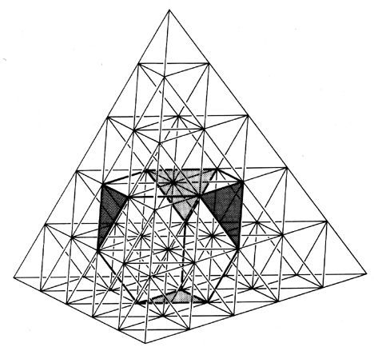

Fig. 986.062 Truncated Tetrahedron within Five-frequency Tetra Grid: Truncating the vertexes of the tetrahedron results in a polyhedron with four triangular faces and four hexagonal faces. (Compare Figs.
1041.11
and
1074.13
.)
Copyright © 1997 Estate of R. Buckminster Fuller